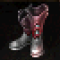
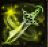
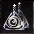
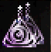
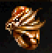
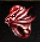
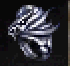
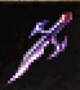

군주 장비 정보
1차·2차·3차 장비를 확인하세요. 아이템을 선택하면 이미지와 옵션 등록 공간이 펼쳐집니다.
1차 장비
무기
데스나이트의 불검
공격력 (작은/큰 몬스터) 20 / 9
추가 옵션 근거리 대미지+3, 근거리 명중+8, 마법 발동 : 헬 파이어
안전 인챈트 +6까지 안전하게 가능
클래스 군주
설명 공격 시 일정 확률로 헬 파이어가 발동
인챈트 옵션 인챈트 +1 당 발동 확률이 +1% 증가
방어구
신성한 마법방어의 투구
옵션 AC -4, MR+1
종류 투구
클래스 군주
안전 인챈트 +4까지 안전하게 가능
설명 인챈트+1 당 MR+2씩 증가하여 +10까지 MR+20
멸마의 비늘갑옷
옵션 AC -14, HP 회복+8, MP 회복+4, 최대 HP+20, MR+7
종류 갑옷
클래스 군주, 용기사
안전 인챈트 0
설명 인챈트 +1 당 MR+1
수호성의 파워글로브
옵션 AC -1, STR+2
종류 장갑
클래스 군주
안전 인챈트 +4까지 안전하게 가능
설명 +5부터 인챈트+1 당 근거리 명중+1씩 증가하여 +10까지 근거리 명중+6
완력의 부츠

옵션 AC -3, STR+1
클래스 군주
안전 인챈트 +4까지 안전하게 가능
설명 +9에 대미지 감소+1, +7부터 인챈트+1 당 최대 HP+20씩 증가하여 +10까지 HP+80
거대여왕개미 금빛날개
옵션 AC -4, 최대 HP+50, MR+6, 정령 내성+2
클래스 군주
안전 인챈트 +4까지 안전하게 가능
설명 인챈트+1 당 MR+3, +5부터 인챈트+1 당 정령 내성+1씩 증가하여 +10까지 MR+30, 정령 내성+6
완력의 티셔츠
옵션 AC -1, 근거리 대미지 +1, STR +1
클래스 군주
안전 인챈트 0
고대투사의 가더
옵션 AC -0, 근거리 대미지+1, 모든 속성 저항+5
클래스 군주
안전 인챈트 0
설명 인챈트 수치에 따라 추가 옵션이 달라진다. +5 인챈트 시 근거리 대미지+1, +7 인챈트 시 근거리 대미지+2, +9 인챈트 시 근거리 대미지+3.
에바의 방패
옵션 AC -3, 최대 HP+20, 용언 내성+2, 착용 : 헤이스트
클래스 군주
안전 인챈트 +4까지 안전하게 가능
설명 +5부터 인챈트+1 당 용언 내성+1씩 증가하여 +10까지 용언 내성+6, 착용 시 헤이스트 효과 발동
악세서리
화령의 귀걸이
옵션 정보 등록 예정
신성한 완력의 반지
옵션 정보 등록 예정
신성한 완력의 벨트
옵션 정보 등록 예정
신성한 완력의 목걸이
옵션 정보 등록 예정
2차 장비
무기
안타라스의 단검

공격력 (작은/큰 몬스터) 11 / 12
추가 옵션 공격성공률 +11, 추가타격치 +10, STR+4
안전 인챈트 +6까지 안전하게 가능
방어구
지휘관의 투구
옵션 AC -4, MR+1, 기술 내성+4, 정령 내성+1, 용언 내성+1, 공포 내성+1
안타라스의 예지력
옵션 AC -11, HP 회복+9, MP 회복+3, 대미지 감소+3, 땅 속성 저항+50, 모든 내성+2, 독 내성
파푸리온의 예지력
옵션 AC -11, 최대 HP+30, HP 회복+11, 최대 MP+20, MP 회복+4, 모든 내성+2, 물 속성 저항+50
린드비오르의 예지력
옵션 AC -12, HP 회복+9, MP 회복+3, 최대 HP+70, 최대 MP+10, MR+8, 모든 내성+2, 바람 속성 저항+50
발라카스의 예지력
옵션 AC -13, 16초마다 MP 회복+4, 최대 HP+80, 최대 MP+20, STR+1, 근거리 대미지+3, 감소 무시+3, 모든 내성+2, 불 속성 저항+50
타락의 장갑
옵션 AC -2, CON+1, 최대 HP+100
타락의 부츠
옵션 AC -2, 최대 HP+100
타락의 망토
옵션 AC -2, 최대 HP+100, CON+1
화룡의 티셔츠
옵션 AC -2, STR+1, 근거리 대미지+1
화령의 가더
옵션 AC -2, 추가 대미지+1
반역자의 방패
옵션 AC -4, 기술 내성+2, 정령 내성+2, 용언 내성+2, 공포 내성+2, 확률 대미지 감소+50
악세서리
룸티스 귀걸이

옵션 AC-1
인챈트 -
설명 룸티스 계열 귀걸이입니다.

옵션 AC-1 / 최대 MP+5
인챈트 -
설명 룸티스 계열 귀걸이입니다.

옵션 AC-1 / 최대 HP+10
인챈트 -
설명 룸티스 계열 귀걸이입니다.
스냅퍼 반지

옵션 AC-1 / 근거리 명중+1 / 근거리 대미지+1
인챈트 -
설명 스냅퍼 계열 반지입니다.

옵션 AC-1 / 최대 HP+50
인챈트 -
설명 스냅퍼 계열 반지입니다.

옵션 AC-1 / 최대 MP+15
인챈트 -
설명 스냅퍼 계열 반지입니다.

옵션 AC-1 / MR+5
인챈트 -
설명 스냅퍼 계열 반지입니다.
타이탄의 벨트
옵션 정보 등록 예정
신성한 영생의 목걸이
옵션 정보 등록 예정
3차 장비
무기
바람칼날의 단검

공격력 (작은/큰 몬스터) 25 / 19
추가 옵션 STR+1, CHA+1, 근거리 대미지+10, 근거리 명중+15, HP+100, HP 흡수, 기술 적중+5, 정령 적중+5, 용언 적중+5, 공포 적중+5, 마법 발동: 윈드 포스
안전 인챈트 0
방어구
아인하사드의 투구
옵션 정보 등록 예정
아인하사드의 갑옷
옵션 정보 등록 예정
아인하사드의 장갑
옵션 정보 등록 예정
아인하사드의 부츠
옵션 정보 등록 예정
아인하사드의 망토
옵션 정보 등록 예정
실프의 티셔츠
옵션 정보 등록 예정
신성한 영생의 가더
옵션 정보 등록 예정
악세서리
3차 악세서리 목록은 아직 제공되지 않았습니다.